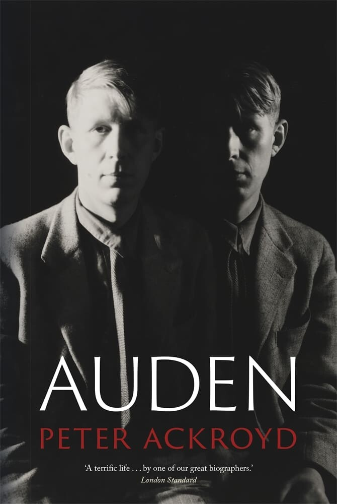

Essays
The Finished Article: Auden by Ackroyd
Auden by Peter Ackroyd. Reaktion Books, 400 pp.

W. H. Auden spent thirty years editing himself, and the editing did not stop at the poems. He cut from “September 1, 1939” the stanza containing the line everyone could recite — “we must love one another or die” — then later omitted the poem altogether, on the ground that the line was a lie. He reordered a collected edition alphabetically rather than by date, Ackroyd tells us, expressly to confuse critics and readers about his own development. And in 1972, arranging his affairs for the death he expected, he instructed his executor to ask in the papers that any friend holding his letters burn them when they were done with them and show them to no one. The compulsive reviser’s final revision was to be the record of the life itself.
Peter Ackroyd has written the book Auden hoped would be impossible. It is warm, swift, immensely readable, and it behaves toward its subject exactly as its subject wished to be behaved toward: it presents the curated surface as the life, and shows little of the working.
⁂
It is worth being clear about what kind of book this is, because the answer is not a fault. Ackroyd is not Carpenter, assembling the biographical record; he is not Mendelson, who in Early Auden and Later Auden made the development of the work into a life’s study; he is not Nicholas Jenkins, whose recent The Island gave us, with great care, the half-life up to 1939 and the Englishness Auden was leaving. Ackroyd is a storyteller, a maker of momentum, and he has done what storytellers do. The trouble is the subject he has chosen to tell.
Because no writer of the century was more hostile to exactly this enterprise. Auden believed that a poet’s private life was no proper business of the reader, that the work was the only testimony with standing, and that the rest was gossip dressed as inquiry. The instruction to burn the letters was not eccentricity; it was doctrine, an attempt to enforce in death the boundary he had argued for in life. He had even written the standard down, decades early, in the sonnet that opens by promising that a shilling life will give you all the facts — the public school, the fighting, the work that set the great on edge — and then turns, in the sestet, to the one who loved him, the letters left unanswered, the longing no fact accounts for. The facts on one side; the life on the other. The poem is a small treatise on the limit of the genre Ackroyd is practicing.
Late in life, Auden made the distinction plainer. There is, he said, an inner and an outer biography, and the events that seem decisive to other people, the events with which biographers are concerned, are rarely the same as the moments the subject knows to have been crucial. Ackroyd quotes the distinction and then writes almost entirely in the outer key. So the question this biography raises is not the bibliographic one. It is Auden’s own. What kind of truth can a life of the facts tell, and is it the truth that matters?
⁂
What the book can tell, it tells beautifully, and the means is anecdote. Consider the death of Auden’s mother. Told the news, he is said to have replied “Goody, goody” — his stock phrase, because it meant an engagement he could now escape — and then, learning why, to have observed that it was just like her, that her last act on earth should be to spare him a party. Then he wept. It is a flawless sequence: the deflection, the wit, the grief arriving a beat behind. It is memorable speech, in Auden’s own sense of the phrase, returned as biographical method. It is also so flawless that one wants to know who heard it, and in what order the parts truly arrived, and how often the line was burnished across fifty years of retelling between the moment and the page. The book does not say, and cannot, because everything in it has already been smoothed to this finish.
This is where the absence of friction, rather than the absence of footnotes, becomes the point. The volume is not unscholarly in the obvious sense: it carries a full bibliography, an index, a primary-source list. But its entire “References” section consists of three notes, and all three exist only to tell you which Princeton editions the quoted poems come from. The poems are sourced to the page. Not one remembered conversation is given the kind of note that lets the reader follow it back to its witness. The biography becomes a book of memorable speech without the burden of memory’s provenance. What needs no proof, in this method, is precisely what cannot be checked. The reviser would have understood the arrangement perfectly.
⁂
The reviser worked by abandonment. For Auden revision was never the correction of error; it was thought refusing to stop once the poem was in print, the mind keeping faith with itself rather than with the artifact it had made. A poem was a position held provisionally, and to revise it was to go on thinking it. He let the poems leave him looking complete, then went on quarreling with them in private — cutting, restoring, disowning, renaming, arranging by alphabet so that no one could watch him grow. “September 1, 1939” is the case in miniature. There he reached for a deliberate plainness, a recessive note borrowed from Yeats’s “Easter, 1916” — the same short, stretched trimeter — and tried to make a public voice sound like a man thinking aloud in a bar. Then he decided the poem’s central consolation was false and spent years trying to unwrite it. The poem we argue about is not the poem he wanted; it is the one he abandoned, and the abandonment is the meaning.
A biography alert to this would live at the desk. Or, in Auden’s own childhood figure, it would descend the shaft. Ackroyd gives us the shafts: the lead mines, the abandoned machinery, the underground books, the private sacred world of northern limestone, the child dropping stones into the dark and hearing the reservoir stir. The whole imagination begins below ground. Yet the biography walks us to the mouth of the mine and will not go down.
Ackroyd is not blind to the machinery. He hears the metre, notices the old forms, registers the prosodic discipline, and knows that for Auden craft was not ornament but conscience. But again and again he names the working and stays near the surface. He records that Auden called a late poem “The Cave of Making,” and leaves the cave unentered. He notes that Auden enlisted his friend Alan Ansen as a kind of prosodic conscience, a second ear for the scansion, and lets the detail pass as color rather than as evidence of how anxiously this fluent man distrusted his own fluency. Auden liked to quote Valéry’s line that a poem is never finished, only abandoned — a sentence that should organize a chapter and instead decorates one. The book reads, start to finish, like the finished article. And so it quietly asks us to believe the poems arrived that way too: born complete, rather than cut down to looking complete. It has reproduced the surface and suppressed the labor, which is to say it has told the fiction Auden most wanted us to believe: that the poems were born as finished as they look.
⁂
The same smoothing does graver work elsewhere, and here the book’s much-praised evenness of tone has to be called what it is. Reviewers have admired Ackroyd for declining to judge, for letting us decide. But evenness of tone is not neutrality of method. To decline interpretation is itself an interpretation; every omission is already a verdict. The life on the page includes an attachment, formed when Auden was a young schoolmaster, to Michael Yates, a boy of thirteen, and a later suggestion that the attachment became sexual; a thread of incestuous ideation; a steady current of rudeness, bullying, and casual harm braided through the generosity. A manner that files these down to the same companionable register as the slippers and the Garbo films has not withheld judgment. It has delivered one — for the surface, against the reckoning — and declined to admit it.
Even the chapter titles disclose the method. “Beloved, We Are Always in the Wrong.” “I’m Sure There’s a Bit of Herod in Me.” “It’s Wrong to Be Queer.” “I Needed the Money.” The contents page reads like a found poem made of self-caricature, confession, and evasion. It lets Auden’s quotable surfaces organize the life before the life has even begun.
What makes the evasion strange is the man it is performed upon. Auden was the least neutral human imaginable on the question of conduct. He needed to be right; the need disfigured some of the poems, and he knew it. He put the Herod in himself into a chapter title without flinching. His whole maturity argued toward the Anglo-Catholic conviction that before God we are, all of us, always in the wrong — a phrase the book lifts for a heading without weighing what it costs to mean. A life organized around the demand that one judge oneself is here narrated by a method that judges nothing aloud. The book’s refusal to be right about Auden is the exact inverse of his refusal to be wrong, and it is not the kindness it appears to be.
⁂
None of this would sting if the book were not so good at what it can do, and the credit should be plain. Ackroyd has gathered the largest, most companionable chorus any Auden reader has been given. Where Carpenter holds the facts and Mendelson holds the work, Ackroyd holds the talk — the squalid New York apartment with its tacky chandelier and its smell of cat, the carpet slippers, the punctuality raised to a creed, the bills paid as an article of faith, the tears at a Garbo picture. By the time the body begins its harrowing late slide into what Auden called premature old age, the reader knows the voice well enough to hear it failing. That is not nothing; it may be most of what a general reader wants, and it is earned on every page.
⁂
The book ends where its method was always going to deliver it: not on Auden but on Chester Kallman, who outlived him by sixteen months and, the closing pages suggest, may have died of grief as much as of anything in the certificate. It is a lovely sentence and a self-revealing one. Handed at last a verdict to render — on the work, the harm, the genius, the man — the biography passes the summing-up to someone else’s heart.
The reviser got his wish. He is delivered to us finished, abandoned, the labor scraped away and every friction between memory and anecdote polished out, the apparatus that might convict or absolve him withheld where it matters most. And the man who thought the biography of a writer a superfluous and faintly indecent thing has been given the warmest possible proof that it can be done anyway — done with such charm that we forget, for whole chapters, that he forbade it. He would, one suspects, have admired the finish and been appalled by the book. That he might have loved it regardless is the most damning thing one can say.
⁂
J.M.C. Kane is the author of Quiet Brilliance: What Employers Miss About Neurodivergent Talent and How to Finally See It. His prose work has been published in more than three dozen literary journals & magazines, including Copper Nickel, Camus, Plough, America, Palisades Review, and Smokelong Quarterly. His essay, “Nomenclature of a Life”, cataloguing his experience as an ASD-1, was awarded the 2026 Ellis Prize for Nonfiction (New Ohio Review).